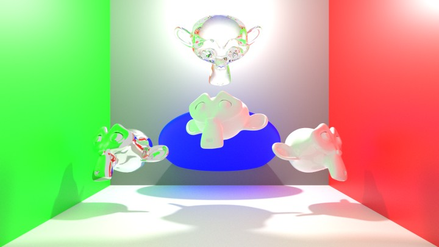
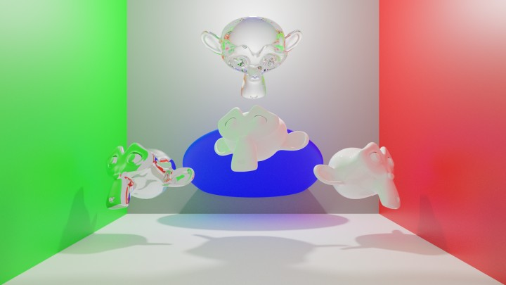
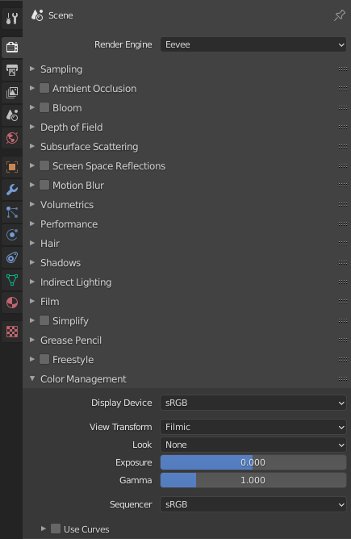
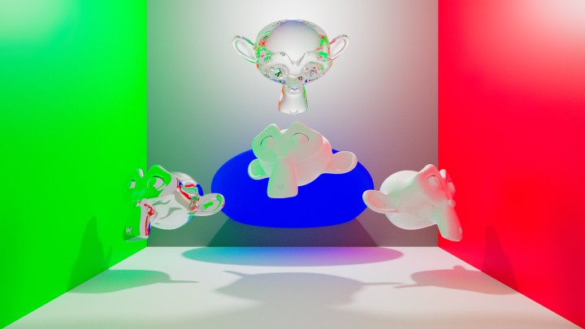
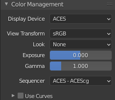

II.I - Gestion des couleurs : Blender¶
Blender utilise nativement OpenColorIO* (cf. I.N - OpenColorIO et ACES) pour la gestion des couleurs, et ses paramètres sont très simples.
Une excellente configuration OCIO par défaut est fournie avec Blender, qui inclut les espaces nécessaires pour importer des fichiers images et vidéo, exporter dans plusieurs formats, et un espace de travail Filmic fonctionnant très bien pour les rendus 3D.
On peut toutefois aussi facilement utiliser une configuration avec ACES si l’on souhaite en profiter ou intégrer Blender à une chaîne de fabrication en ACES, l’espace de travail ACES étant légèrement différent de Filmic.
I.1 - Configuration par défaut : Filmic¶

a. Rendu sans gestion des couleurs, avec l’espace de travail sRGB standard.

b. Rendu avec gestion des couleurs, dans l’espace de travail Filmic.
Avec la configuration par défaut et l’espace Filmic pour le rendu (scene referred), voici les quelques paramètres de couleur dans Blender.
I.1.a - Rendu (scene referred) et affichage¶

Ces paramètres se situent dans les paramètres de rendu, section Color Management.
Note
- En sortie OpenEXR, seules les données brutes (linéaires) sont enregistrées.
- Pour les autres formats, les paramètres sont appliqués lors de la conversion vers l’espace colorimétrique du format de sortie.
Il est important de bien noter que dans une chaîne de production avec gestion des couleurs, et utilisant le format OpenEXR* comme format intermédiaire (et donc d’enregistrement en sortie de Blender), toutes ces options n’influencent que l’affichage du rendu dans Blender mais pas les données enregistrées dans le fichier OpenEXR ! Il faut donc ré-appliquer les mêmes réglages dans les applications suivantes de la chaîne (de compositing comme Nuke, After Effects, etc. par exemple).
Si les autres applications n’utilisent pas OpenColorIO* (et qu’on ne peut donc pas donner la configuration OCIO de Blender), on peut toutefois retrouver ces réglages via des LUT* exportées depuis la configuration OCIO de Blender. Cf. I.2 - Chaîne de fabrication OCIO
Par contre, ce n’est pas le cas quand on enregistre les images dans d’autres formats (PNG, vidéo, etc.), auquel cas Blender applique tous les réglages dans l’image qui, contrairement à l’OpenEXR, est enregistrée dans un espace colorimétrique précis (sRGB pour les images, Rec.709 pour les vidéos, etc.).
- Display Device : choisissez l’espace d’affichage. En général, laissez sur sRGB.
- View Transform : c’est le paramètre de l’espace de travail (scene referred) qui transforme les données brutes linéaires du moteur de rendu vers l’affichage.
- Filmic (fig. a) : C’est l’espace par défaut, très performant pour atténuer les hautes lumières qui brûlent facilement et garder des détails dans les zones sombres. Il simule en fait l’impression des images sur pellicule et permet un rendu assez fin et détaillé.
- Standard (fig. b) : Affiche les données dans l’espace d’affichage ; cette option permet de voir comment une application afficherait l’image sans application de l’espace Filmic. Il est peu utile, les hautes lumières devenant trop facilement brûlées, sauf éventuellement en utilisant les outils de courbes plus bas.
- Filmic Log : une version logarithmique du Filmic, destinée surtout à effectuer d’importantes retouches de couleurs en compositing.
- Raw : affiche les données brutes sans transformation, telles qu’elles sont enregistrées dans les fichiers OpenEXR si c’est le format choisi en sortie.
- False Color : un affichage contrasté en couleurs variées destiné à pouvoir analyser en détail le contenu de l’image.
- Look : applique en plus de l’espace de travail (View Transform) un réglage supplémentaire selon un choix purement artistique et créatif.
Chacune des options est un choix de contraste de l’image. Medium et None sont exactement les mêmes options. - Exposure et Gamma : changent l’exposition et appliquent une éventuelle correction gamma* à l’image.
Mieux vaut ne pas changer ces paramètres si la chaîne de fabrication implique d’autres applications après la sortie de Blender et qu’on utilise le format OpenEXR. Ils peuvent toutefois être utiles pour retoucher simplement le contraste de l’image en sortie, si on exporte dans un format d’image ou vidéo final, autre que EXR. Ces réglages influençant l’espace de travail, ils s’appliquent après les noeuds de compositing. - Sequencer : réglage de l’espace de travail du séquenceur (le module de montage vidéo).
N’influence pas les images 3D ni le compositing.
Blender propose aussi un outil d’ajustement de l’image via des courbes, qui permet des retouches fines de l’image.

Cet exemple reproduit à peu près ce que fait l’espace Filmic.
Si cet outil peut être pratique pour retoucher les images qui sortent de Blender, il est à proscrire si l’on travaille sur une chaîne avec gestion des couleurs et utilisant le format OpenEXR : il serait trop compliqué de reproduire exactement le même effet de courbes dans les applications qui suivent Blender dans la chaîne de fabrication.
I.1.b - Sortie¶

Blender n’affiche pas d’option de couleurs (à part quelques modes et la profondeur) pour la sortie des images ; il utilise l’espace standard du format de sortie (sRGB pour les formats image, données brutes linéaires en OpenEXR)
En OpenEXR les deux profondeurs* sont :
- Float (Half) : 16 bpc float.
- Float (Full) : 32 bpc float.
Suivant le compositing à faire dans les applications suivantes ou les formats finaux, on pourra préférer Float (Full) en gardant à l’esprit que les fichiers seront parfois bien plus gros et lourds en calculs.
Cf. chapitre I.K - Format des pixels pour plus d’informations.

Ce qu’il faut retenir :
- En OpenEXR (et OpenEXR MultiLayer) : ce sont les données brutes et linéaires qui sont enregistrées.
Il faudra ré-appliquer les mêmes réglages que ceux choisis dans les paramètres de rendu et color management lors de l’utilisation des fichiers dans d’autres applications pour retrouver la même image. C’est le format qui permet le meilleur contrôle et la meilleure qualité. - Dans les autres formats image et vidéo : ce sont les données converties via l’espace de travail vers l’espace standard du fichier qui sont enregistrées (sRGB ou Rec.709 en général). Les images affichées telles quelles seront donc automatiquement les mêmes que dans Blender (mais on perd en qualité avec la perte de la linéarité notamment, et de profondeur des couleurs).
I.1.c - Entrée (textures)¶

À l’ajout d’images dans Blender, le sélecteur Color Space permet de préciser l’espace colorimétrique utilisé par le fichier en question.
- Filmic Log : à utiliser (uniquement) au cas où le fichier est un fichier OpenEXR précédemment exporté ou rendu par Blender avec l’espace de travail Filmic Log.
- Linear : pour les fichiers OpenEXR standards (ou d’autres formats éventuels en RGB linéaire).
- Linear ACES : pour les fichiers OpenEXR rendus avec l’espace de travail ACEScg.
- Non-Color et Raw : le fichier ne contient pas une image mais des données (comme une normal map, une displacement map, une metalness, etc.)
- sRGB : pour tous les fichiers image et vidéo standards.
- XYZ : en cas de chaîne de production dans l’espace XYZ.
Note
La présence de l’espace Linear ACES permet d’importer des images ayant utilisé ACES, mais Blender ne s’intègre pas pour autant complètement dans une chaîne de fabrication utilisant ACES par défaut ; en effet il ne propose pas d’espace de travail ACES.
Cf. I.3 - Utiliser ACES
I.2 - Chaîne de fabrication OCIO¶
Cf. II.D - Concevoir une chaîne de fabrication avec OpenColorIO.
La configuration OCIO* fournie par défaut avec Blender, Filmic, est disponible dans le dossier de configuration de Blender, datafiles/colormanagement/config.ocio.
Il est donc possible d’utiliser cette configuration sur toute la chaîne de production en pointant cette configuration dans les autres applications, ou en définissant la variable d’environnement OCIO sur ce fichier.
Pour inclure des applications n’utilisant pas OpenColorIO à la chaîne (comme Adobe After Effects ou Adobe Photoshop), on peut toujours générer les LUT* nécessaires, en particulier la LUT qui convertit les images linéaires (comme en openEXR*) vers sRGB ou d’autres espaces courants. Nous proposons plusieurs de ces LUT en téléchargement ici, dans différents formats. Il suffit alors d’appliquer la LUT voulue pour retrouver l’espace Filmic de Blender dans une autre application.
I.2.a - Changer la configuration OCIO¶
Pour utiliser une configuration différente de la Filmic par défaut, Blender ne permet pas de sélection une configuration via l’interface, mais deux solutions sont possibles.
-
Via la variable d’environnement
On peut simplement changer la variable d’environnement du systèmeOCIOpour pointer vers le chemin de la configuration à utiliser.
Cf. II.D - Concevoir une chaîne de fabrication avec OpenColorIO. -
En remplaçant le fichier dans le dossier Blender
On peut aussi supprimer la configuration existante dans le dossier de Blender pour y copier la nouvelle configuration (le fichierocio.configet les sous-dossiers associés). Pensez simplement à garder une copie de la configuration d’origine !
Il est aussi bien sûr possible d’éditer soi-même le fichier de ocio.config de Blender, pour les utilisateurs avancés.
I.3 - Utiliser ACES¶
Il peut être intéressant d’utiliser l’espace de travail ACEScg plutôt que le Filmic par défaut de Blender pour un rendu un peu différent, ou pour intégrer Blender à une chaîne de production utilisant ACES.
Voici une comparaison des résultats du même rendu dans différents espaces :
a. Rendu sans gestion des couleurs, avec l’espace de travail sRGB standard.
b. Rendu avec gestion des couleurs, dans l’espace de travail Filmic (réglage “Medium-Contrast”).

c. Rendu avec gestion des couleurs, dans l’espace de travail ACEScg.
Comme on peut le voir sur ces images, ACES garde mieux la saturation des couleurs très lumineuses, et un peu plus de contraste, alors que Filmic a tendance à ternir un peu les images.
Pour utiliser ACES* avec Blender et profiter de son espace de travail performant, il suffit d’utiliser la configuration OCIO* correspondante.
Cependant, la configuration fournie par OCIO pour ACES comporte une longue liste d’espaces colorimétriques correspondant à divers modèles de caméras, très utile en cinéma pour le travail sur les images filmées, mais qui complique la tâche en animation et notamment dans Blender.
 La liste des espaces colorimétriques affichée dans Blender avec la configuration ACES d’origine !
La liste des espaces colorimétriques affichée dans Blender avec la configuration ACES d’origine !
Nous proposons en téléchargement ici une version modifiée de ACES spécifiquement pour l’animation, notamment en limitant le nombre d’espaces colorimétriques inclus à ceux qui sont potentiellement réellement nécessaire en animation. Ce travail effectué depuis les sources de Sony Pictures ImageWorks est disponible ici sur Github.
 La liste des espaces colorimétriques affichée dans Blender avec la configuration ACES ajustée par nos soins.
La liste des espaces colorimétriques affichée dans Blender avec la configuration ACES ajustée par nos soins.
Voici les nouveaux réglages disponibles une fois cette configuration installée.
I.3.a - Rendu (scene referred)¶

Voici les réglages des paramètres de rendu, color management, une fois ACES* disponible.
- Display Device ne contient plus qu’une seule option, ACES. Ce n’est pas très standard dans la manière de fonctionner, mais ACES est fait comme ça…
- C’est View Transform qui contient les espaces d’affichage, auxquels sont appliqués l’espace de travail ACEScg.
- Il n’y a pas de Look créatif fournit avec ACES. Les Looks de Filmic ne sont de toute manière pas très utiles (ils peuvent facilement être reproduits en compositing).

Choisissez simplement l’espace d’affichage correspondant à votre écran (généralement sRGB).
- Raw affiche les données brutes sans transformation, telles qu’elles sont enregistrées dans les fichiers OpenEXR si c’est le format choisi en sortie.
- Log est l’équivalent ACES de Filmic Log, utile en cas de retouches fortes en compositing.
- Plusieurs espaces proposent une variation avec le point blanc* D60 au lieu de D65. En effet, D60 (environ 6000 K) est le point blanc de ACES et choisir une de ces options permet de voir l’image sans la conversion du point blanc.
I.3.b - Entrée (textures)¶
Pour l’import des images, une grande liste d’espace colorimétriques potentiels est disponible. Voici les plus utiles et les plus courants.
- Les espaces ACES sont les espaces habituels de ACES:
- ACES2065-1 : espace colorimétrique pour le stockage préconisé par la norme ACES dans les fichiers OpenEXR, mais encore assez peu utilisé.
- ACEScc et ACES - ACEScct : espace colorimétrique ACES dédié à la correction des couleurs, dans des fichiers OpenEXR en général. Il est peu probable que l’on ait à importer ce genre de ficher dans Blender, sauf éventuellement un fichier OpenEXR venant d’un logiciel d’étalonnage ou de compositing.
- ACEScg : espace de travail de ACES pour les rendus et le compositing. Dans une chaîne utilisant ACES, les textures peuvent être fabriquées dans cet espace et importées dans Blender via des fichiers OpenEXR.
- Input - Generic - sRGB - Texture et Utility - sRGB - Texture sont identiques. Pour les fichiers images standards en sRGB (PNG, TGA, etc).
- Les espaces Output ne devraient pas être utiles en entrée…
- Les espaces Role sont des alias pour d’autres espaces en fonction de leur usage, et peu utiles ici.
- Les espaces Utility contiennent plusieurs éléments importants pour importer des images dans Blender :
- Curve convertissent uniquement la courbe de transfert des fichiers importés, mais pas les primaires.
- Linear convertissent uniquement les primaires mais pas la courbe de transfert. Certains sont courants et utiles :
- Linear - sRGB est l’espace par défaut des fichiers OpenEXR.
- Linear - Rec.709 est parfaitement identique à Linear - sRGB.
- Raw est l’espace à utiliser pour les fichiers ne contenant pas des images mais d’autres données (comme les normal map, displacement map, metalness, etc.)
- Rec.709 - Display est l’espace des vidéos HD standard (MP4 par exemple)
- Rec.2020 - Display est un espace de vidéo UHD (4K)
En résumé :
- Fichiers OpenEXR contenant de l’image : ACES - ACEScg si le fichier vient d’une application travaillant en ACES, Utility - Linear - sRGB dans les autres cas.
- Fichiers OpenEXR contenant des données autres que de la couleur : Utility - Raw.
- Fichiers image (PNG, JPG, TGA, etc.) : Utility - sRGB - Texture.
- Fichiers vidéo (MP4) : Utility - Rec.709 - Texture dans la majorité des cas, Utility - Rec.2020 - Display en cas de vidéo UHD.
Sources et références